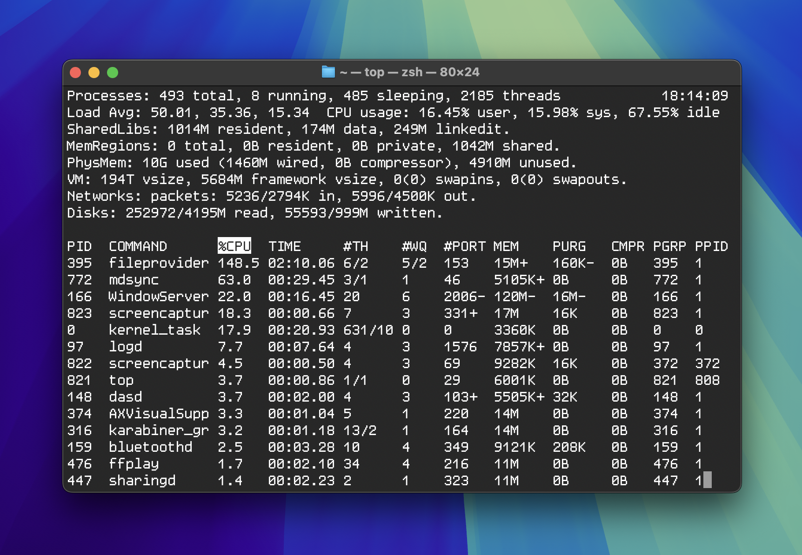

FreeBSD vs macOS for Daily Use: My Personal Migration Story
As a designer I’ve been using macOS since 2005, but with each new update, I dislike where Apple is going. They add unnecessary features that use system resources and can’t be turned off. If your Mac can’t handle macOS, the only solution is to buy a more powerful Mac. This is probably okay; people upgrade their hardware from time to time, and this is part of the evolution of the field. However, Apple can abandon any five-year-old Mac as obsolete. In my opinion, though, a five-year-old computer can still handle many things and should have enough power to be fast enough. That would be true if macOS didn’t outgrow the hardware so quickly.
To make macOS last longer and remove unnecessary features from the system, I decided to learn more about how macOS works. To my surprise, I found that it was very similar to my past FreeBSD experience.
- Both Unix
- macOS has many terminal apps that I’ve seen before, such as top, ps, and ifconfig.
- Bash, Zsh, and Tcsh.
- As we know, Apple only uses part of FreeBSD in their kernel.
- Services called “daemons” are also present, just like in FreeBSD.
- macOS and FreeBSD share a similar file system hierarchy: ~/ for the user folder, ~/Desktop, ~/Downlods and so on.
- System directories such as /etc, /bin, /usr, etc.
- The man page is very similar to FreeBSD.
After discovering all these similarities, I started thinking that, instead of trying to do something with macOS (which is closed and restrictive), it might make more sense to focus on FreeBSD, where I have full control and can change how things work.
I had some experience with FreeBSD 4.5 on my old 486 IBM PC, but after 20 years, I decided to refresh my knowledge and see how far I could go.
In this experiment, I switched from macOS to FreeBSD to achieve the following goals:
- To compare the performance of both systems for desktop usage. This is important because Macs are expensive. What hardware will be needed to comfortably use one in 2025? In this comparison, I pit a $2,000 MacBook Pro M1 Pro against a $300 MiniPC. As you may recall, the introduction of the M1 processor was a significant event for Apple, marking the beginning of a new era of speed an optimization.
- I wanted to tweak FreeBSD to match macOS as closely as possible so that, when switching from a working computer to FreeBSD, I would have a similar experience.
- To show my friends and the world that there is a good alternative to macOS that is not Windows or Linux.
Before I begin, here are my quick tests for both systems. I’m running mostly apps that I’ve used before to see how quickly each one can be run and how responsive they feel during the initial launch and subsequent usage.
YouTube video loading in Firefox on FreeBSD vs macOS
Open an image on FreeBSD vs on macOS
Play a video on FreeBSD vs on macOS
Open the Photos app on FreeBSD vs on macOS
Hardware
| FreeBSD System on mini PC | MacBook Pro M1 Pro | |
|---|---|---|
| CPU | AMD Ryzen 5 5560U (6 cores / 12 threads, Zen 3) | 10-core (8 performance and 2 efficiency) |
| GPU | Radeon Vega (Cezanne, amdgpu) | Integrated M1 Pro GPU |
| RAM | 16 GB DDR4 | 16 GB LPDDR5 |
| Storage | 512 GB M.2 NVMe SSD | Built-in SSD 512 GB |
| Network | Realtek RTL8111/8168 | Built-in Ethernet (via adapter) |
| Wi-Fi | Intel AX200 (iwlwifi) | Built-in Wi-Fi 6 |
| WM / OS | MATE on FreeBSD | macOS Sequoia 15.4.1 |
When I tell people that a $300 AMD mini PC can keep up with an $2000 M1 Pro MacBook in daily use, the first reaction is disbelief. How is this even possible? The answer lies in the efficiency of FreeBSD and the lack of unnecessary background processes. Unlike macOS, which runs a lot of services in the background (some of which can’t even be disabled), FreeBSD gives you full control. You only run what you need. Combined with lightweight desktop environments like MATE and compiled apps optimized for your specific hardware, the system feels snappy—even on budget CPUs. It’s not magic; it’s just smart, minimal computing.
Resources
FreeBSD, htop:

macOS, htop:
FreeBSD, top:
macOS, top: 
FreeBSD Settings to Match macOS Behavior
If you already have FreeBSD installed, you can follow my approach to make it look and operate more like macOS. I’m using MATE because it runs faster than Xfce on my computer.
Enable vsync
/usr/local/etc/X11/xorg.conf.d/20-amdgpu.conf
Section "Device"
Identifier "AMD Graphics"
Driver "amdgpu"
Option "TearFree" "true"
EndSection
Replaced MATE’s UI fonts to SF Pro Display
- Install SF Pro Display, Regular and set it as default in MATE’s UI.
- To set MATE’s font rendering similar to macOS I connected both computers to my 1080p monitor and made screenshots on both operating systems, then step by step I tried to achieve similarity as close as possible by using Figma and zoom tool and different FreeType font rendering settings. Here is result that I achieved:
To achive that add this:
~/.profile
export FREETYPE_PROPERTIES="cff:no-stem-darkening=0.0 autofitter:no-stem-darkening=0.0"
Set Smoothing to Grayscale and Hinting to None (I also set font size to be 10 and DPI to 95):
Results. Fonts in macOS vs in MATE:
- For console I’m using SF Mono.
Mate Settings
Then I changed MATE’s most common shortcuts to:
- CMD + Tab to app switch
- CMD + M to minimize
- CMD + Q to close app
- CMD + W to close tabs
- CMD + H to hide apps
I decided not to use Picom because I wanted to achieve better performance.
Firefox Settings
To change CTRL to CMD in Firefox go to about:profiles, find the Default Profile (marked “Yes”), open that folder, and create a user.js file with the following content:
user_pref("ui.key.accelKey", 224);
To disable the ability to open the menu by pressing Alt (since it’s often pressed accidentally), add the following in about:config:
ui.key.menuAccessKeyFocuses: false
Apps Performance
In order to achieve better performance, I’m using the ports compilation to my hardware method (make clean) instead of installing from packages (pkg install), inspired by this video:
I also started using the Synth app for that.
macOS Wallpapers

My favorite wallpapers are from macOS Sequoia and macOS Ventura.
Mate Theme & Icons & Cursors
Will be added soon.
Dock
Will be added soon.
FreeBSD Desktop Project
If you’ve read the article up to this point and have never tried FreeBSD on real hardware—or tried it before but ran into issues—I want to mention that the FreeBSD Foundation is actively working on improving the desktop experience.